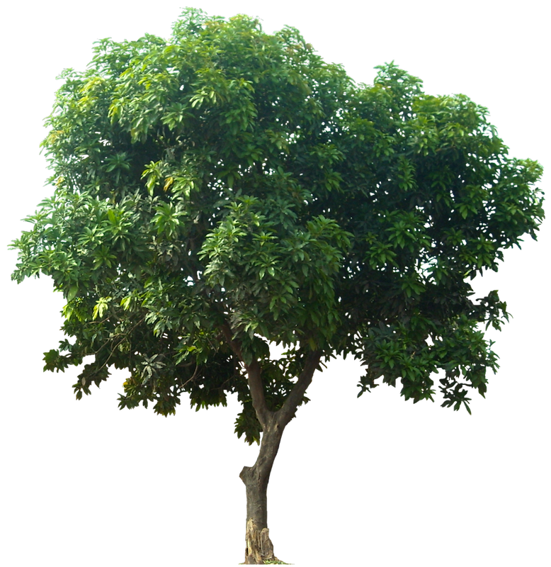
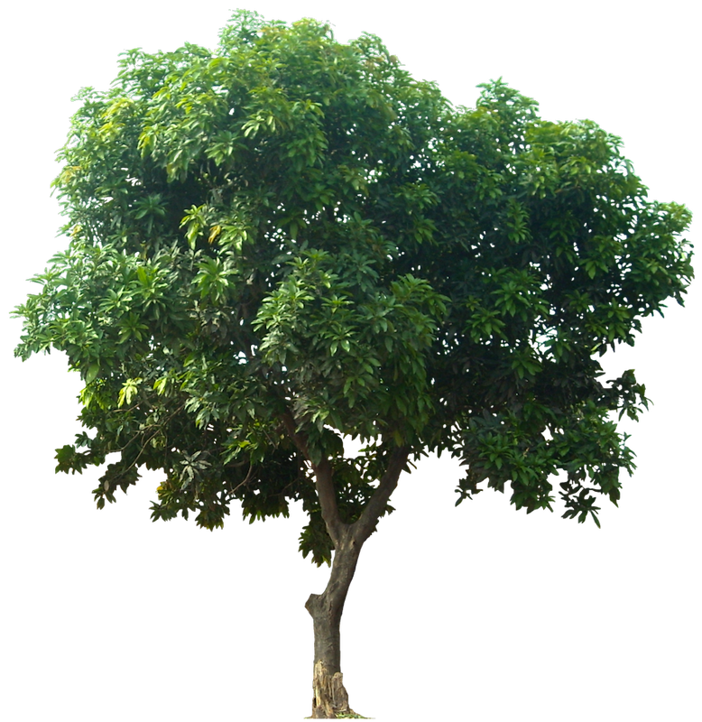

2013 – 2025
NYC Citi Bike Dashboard
Beautiful, data-driven insights into how New Yorkers move.
685
Miles/Year per Member
NYC's Citi Bike stations are most densely concentrated in Manhattan compared to other boroughs. This is largely due to Manhattan's high population density, significant commuter traffic, and major commercial and tourist hubs. The extensive network of stations in areas like Midtown, Downtown, and the Upper West and East Sides ensures easy accessibility and supports the heavy demand for short-distance travel. While Citi Bike has expanded into Brooklyn, Queens, and the Bronx, the coverage in these boroughs remains less dense, making Manhattan the central focus of the bike-sharing system
In recent years, Citi Bike has extended its footprint well beyond Manhattan, significantly expanding into underserved neighborhoods across Queens, Brooklyn, and the Bronx. These efforts reflect the city's broader push to make micromobility equitable and efficient for residents in all boroughs.
The most frequently traveled Citi Bike routes reveal distinct patterns in how New Yorkers use the bike-sharing system. Popular routes often connect major transit hubs, commercial districts, and residential areas, with particularly heavy traffic between Manhattan's key subway stations and business centers. Central Park's perimeter stations see significant activity, highlighting the bike share's dual role in both commuting and recreation
Major pairs of routes are located in Manhattan, particularly around Midtown and Downtown, where the highest volume of trips occurs. The chord diagram reveals strong connections between popular stations, highlighting key commuting and leisure travel patterns.
Station growth and ridership show strong correlation, with expansion into new neighborhoods driving increased system usage. The steady upward trend reflects successful implementation of expansion plans and growing adoption of bike-sharing across the city.
Daily ridership forecasts reveal consistent growth patterns with pronounced seasonal variations. The Prophet forecast model predicts increasing peak usage during summer months while maintaining steady baseline growth
Annual membership rides demonstrate robust year-over-year growth, highlighting increasing reliance on Citi Bike for regular transportation. The consistent upward trend suggests strong user retention and growing adoption among New York residents.
Monthly usage patterns in 2024 showcase clear seasonal trends with peak activity during summer months where casual riders show an increase in usage. The data indicates sustained ridership even during colder periods, reflecting the system's role as a reliable year-round transportation option
Hourly ride distribution reveals distinct commuting patterns with prominent morning and evening peaks
The distribution between classic and electric bikes shows evolving user preferences where E-bikes are gaining increasing popularity
The radial visualization highlights daily usage patterns across different days of the week. Weekday peaks align with commuting hours, while weekends show more distributed activity
Monthly hourly patterns demonstrate how daylight and weather influence riding behavior throughout the year. Summer months show extended evening activity, while winter months see concentrated usage during daylight hours.
Gender distribution trends from 2013 to 2019 show gradual progress in rider diversity. While disparities persist, ongoing initiatives aim to make the system more inclusive and accessible to all demographics.
Age and gender analysis reveals usage patterns across different demographic groups. The data suggests strong adoption among working-age adults, with opportunities to expand engagement across other age segments.
A higher proportion of Men riders tend to drive at 10+ km/hour than Women riders
 
